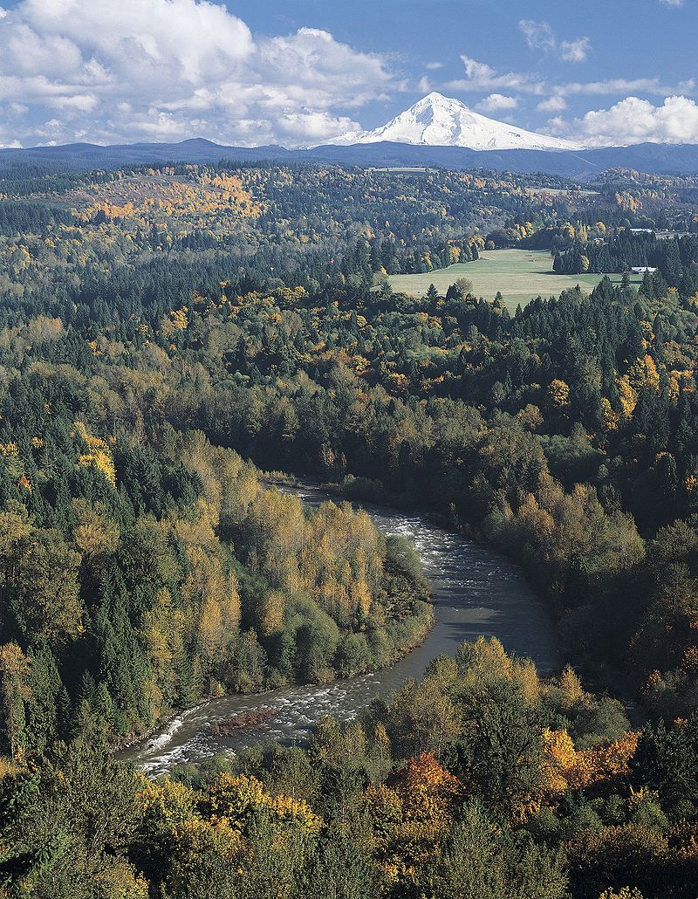

Sandy River
Open to trout May 22- Oct 31 Althought not many resident trout can be found in this river, it does contain native cutthroat trout as well as some rainbows and rumors of brook trout.
Open to trout May 22- Oct 31 Althought not many resident trout can be found in this river, it does contain native cutthroat trout as well as some rainbows and rumors of brook trout.

Tributary of the Sandy river, the preffered stream for trout. Plenty of cutthroat and even some brook trout can be found on the lower river when the time is right. The upper river has not been heavily fished and is said to hold whitefish.
Smaller tributary of the sandy river. Holds smaller and fewer trout, though they can be found with persistance. Great source for scenic hikes
This reservoir is no longer stocked, and cut off from its tributary downstream by an irrigation dam, therefore its only surviving fish populations are the brook trout and rainbow trout which were once stocked. As the water gets lower through the summer from irrigation, and the prolific may fly and hexegenia hatches here will land you some fat resident trout when fly fishing in the shallow water amongst the tree stumps.
This Lake is heavily stocked so check the stocking shedule for best fishing times. The lake is full of craw fish as well. Great fishing in the creeks that feed into Timothy, as well as Clackamas lake, which is just across the hwy from Timothy lake road. Species include brook trout and rainbow trout, as well as some brown trout.
Popular lake, best fished with a kayak in order to avoid crowds. Fly fising is best at dawn and dusk when the fish rise for hexegenia, may flies and dragonflies. The lake is stocked and fishes well in the weeds across the lake. Look out for bald eagles!